Концепция продукта · версия 2
Накопительный счёт первого выбора
Один счёт копит, платит и раскладывает зарплату. Ставка за поведение идёт на новые деньги.
новые деньги
конверты и семья
подушка в месяцах
Накопительный счёт первого выбора — версия 254 слайдовтекст слайдовобъединённый прототиппрототип этапово репозитории
Концепция продукта · версия 2
Один счёт копит, платит и раскладывает зарплату. Ставка за поведение идёт на новые деньги.
новые деньги
конверты и семья
подушка в месяцах

Рекомендуем объединённый продукт: счёт копит, платит и раскладывает зарплату по конвертам. Ставка за поведение, от 9,5% до 12,5%, идёт на новые деньги. Прежние остаются на 7,5%, «тратится» — без процентов.
0%
Перешедший клиент приносит те же 24 000 ₽ маржи в год, что и сегодня.
29–50%
В версии 1 было 50–65%. Якорь списывается за 12–24 месяца стажа.
60 млрд ₽
Столько стоили бы 6% всем клиентам. Они остаются адресным предложением для новых.
Нужно от руководства: утвердить правила ставки, запустить пилот с контрольной группой, сверить юридическую конструкцию и сменить метрику трайба на чистый приток.
Расчёт на клиента с 300 000 ₽ при ключевой ставке 14%. Порог — доля новых или удержанных денег, при которой счёт окупается.
01
Рост счетов, ставка за год, конкуренты и преимущества Сбера
4
02
Сегменты, ставка из трёх привычек, якорь и метрики
9
03
Адресное предложение для новых денег: путь клиента и экономика
16
04
Раскладка зарплаты, платежи, семья и цена процентов на «тратится»
25
05
Объединённый продукт: экономика, чувствительность и месяц клиента
35
06
Механики роста, пилот, риски и решения
50
Справа — номер слайда, с которого начинается раздел.
11,1
трлн ₽
на рублёвых накопительных счетах на конец октября 2026
Начало 2026
9,3 трлн ₽
Октябрь 2026
11,1 трлн ₽
+20%
плюс 1,8 трлн ₽ с начала года
94%
дали накопительные счета за 9 месяцев 2026
53%
на вкладах — 45% (ВЦИОМ, конец 2025)
Оценки ВТБ, октябрь–ноябрь 2026 (akm.ru); начало года — расчёт из них. ВЦИОМ — по «Коммерсанту», 27.02.2026.
потом базовая
обещают новым
в среднем за год
Совкомбанк
10%
15,5% · 3 мес.
11,4%
Яндекс Банк
8%
15% · 2 мес.
9,2%
Альфа-Банк
7%
14,7% · 3 мес.
8,9%
Сбер
7,5%
14,5% · 2 мес.
8,7%
Ozon Банк
7%
15,19% · 2 мес.
8,4%
ВТБ
6%
14,7% · 2 мес.
7,5%
6%
8%
10%
12%
14%
16%
Сетка: 9,5–12,5%
На рынке сегодня высокую ставку получают новые деньги. Те, что остаются, получают базовую.
Условия на октябрь–ноябрь 2026 по агрегаторам, без подписок; сверить с тарифами. За год — среднее за 12 месяцев.
Что уже есть на рынке
Чем отвечает счёт
Яндекс Банк
счёт «Сейв»
Платит за подписку и покупки: 8% базовая, 11% с «Плюсом», 13% в день оплаты картой «Пэй».
Надбавки за приток, стаж и запас на новые деньги. Подписка и обязательные покупки не нужны.
Т-Банк
сервис «Распределения»
С мая 2025 сервис предлагает раскладку в день зарплаты, клиент подтверждает операции.
Первая раскладка — с подтверждением, дальше счёт раскладывает сам, а платежи уходят в срок.
Фонды денежного рынка
Московская биржа
Больше 2 трлн ₽ и около 3 млн владельцев. Доходность близка к ключевой ставке, 14%.
Ставка ниже, до 12,5%, зато деньги застрахованы. Сверх подушки счёт сам предлагает фонд Сбера.
Т—Ж, 28.09.2026; пресс-релиз Т-Банка, 28.05.2025; Московская биржа, сентябрь 2026. Ставки и условия сверить с тарифами.
01
Раскладку можно включить у источника: в зарплатном проекте и при назначении пенсии. Часть дохода попадает в «копится» раньше, чем на карту.
02
Кредит, ЖКХ и регулярные переводы уже идут через Сбер. Готовое правило раскладки строится по истории, клиенту остаётся подтвердить.
03
Оплата со счёта работает там же, где клиент платит сегодня. Новую карту и новое приложение заводить не нужно.
04
Подушка считается в месяцах жизни конкретного клиента. Это число есть только у банка, через который проходят его траты.
Размеры зарплатной и пенсионной базы и доля платежей — по данным портфеля; в деку не включены.
Зарплата
120 000 ₽
приходит на карту
Карта
0%
деньги ждут трат и не работают
Накопительный счёт
7,5%
базовая ставка, если клиент перевёл деньги сам
само
перевод руками
обратно на карту, чтобы потратить
0%
Обычная ставка на остаток дебетовой карты
2–3 месяца
Живёт приветственная ставка по счёту
37%
Россиян не откладывают совсем
Базовая ставка счёта Сбера — 7,5% (условия с 27.10.2026, vbr.ru). Опрос НАФИ, апрель 2026.
Идея
Деньги приходят на счёт и уходят с него на покупки, платежи и цели. Высокую ставку получают новые деньги, которые остаются.
Сегмент
Что происходит сегодня
Что предлагает счёт
Не копит
Деньги лежат на карте до зарплаты, подушки нет.
Раскладка зарплаты и «с прибавки» дают первый месяц подушки. Ставка вторична.
«Спящий» остаток
Счёт на базовых 7,5%, не пополняется.
Якорь: ставка прежняя. Сетка — за прирост и стаж.
Охотник за ставкой
Приходит на приветственную ставку, уходит через 2–3 месяца.
Сетка вместо приветственной: ставка держится, пока деньги остаются.
Клиент нескольких банков
Зарплата или накопления лежат в другом банке.
«Ручеёк» через СБП, перенос зарплаты и адресные 6% на «тратится» из этапа 1.
Размер сегментов — по данным портфеля. Новые деньги даёт четвёртый сегмент, рост числа сберегателей — первый.
Этап 1 · адресно
Для клиента, который переводит зарплату из другого банка. Накопительный счёт становится платёжным: ставка за поведение на запас и 6% на новые деньги, которыми он платит.
Приводит в Сбер зарплату и накопления из других банков.
Этап 2 · для всех
Деньги разложены по конвертам: цели копятся, обязательные платежи уходят сами, семья участвует. «Тратится» остаётся без процентов.
Заменяет несколько счетов и ручные переводы между ними.
Рекомендация — объединённый продукт: этап 1 — вход для новых клиентов, этап 2 подключается с первой целью и зарплатой.
Новые деньги
9,5%
зарплата, другой банк, остаток месяца
Приток
+1
пришли извне и остались
Стаж
+1
три месяца без снятия
Запас
+1
на три месяца жизни
Максимум
12,5%
все три привычки
Прежние деньги остаются на базовых 7,5% и переходят на сетку постепенно. Деньги, которыми клиент платит, процентов не получают.
Надбавки по одному процентному пункту — допущение. База 7,5% — ключевая минус 6,5 п.п.
+1 п.п. · приток
За месяц совокупные средства клиента в Сбере выросли: зарплата, пенсия или перевод из другого банка пришли и остались.
Перевод между своими счетами и круг через другой банк не считаются.
+1 п.п. · стаж
Три месяца подряд клиент не берёт деньги из «копится». Снятие откатывает на одну ступень, а не в ноль.
Право на ошибку: одно снятие в квартал не считается, если вернуть сумму за 30 дней.
+1 п.п. · запас
Считается от расходов самого клиента, поэтому надбавка доступна при любом доходе.
Потолок: сетка идёт на подушку до шести месяцев расходов.
Правила одни для всех. Сетка задана формулой от ключевой ставки и меняется вместе с ней.
Срок стажа, порог роста средств, окно возврата и потолок — допущения для обсуждения.
Каждый месяц без снятия на сетку переходит
1/12
прежних денег, если зарплата приходит на счёт. Без неё — 1/24.
Якорь — всё, что лежало у клиента в Сбере в день подключения: карты, счета и вклады. Перевод между своими счетами его не уменьшает.
День подключения: 300 000 ₽
Через 6 месяцев: 360 000 ₽
Через 12 месяцев: 420 000 ₽
Пример: зарплата приходит на счёт, клиент добавляет по 10 000 ₽ новых денег в месяц. «Тратится», 60 000 ₽, остаётся без процентов.
Потолок: сетка действует на подушку до шести месяцев расходов; сверх — 7,5%, вклад или фонд. Сроки списания — допущение.
Метрика 1
Прирост совокупных средств клиента в банке: карты, счета и вклады вместе. Перевод с карты на счёт его не меняет.
Метрика 2
Запас клиента в месяцах его расходов. Доля клиентов с подушкой от одного месяца и от трёх.
Метрика 3
Клиенты, которые пополняют «копится» три месяца подряд. Сегодня 37% россиян не откладывают совсем.
Остаток на накопительном счёте остаётся контрольной метрикой: его можно вырастить переводом с карт и потерять на этом маржу.
Целевые значения — после расчёта на данных портфеля. Опрос НАФИ, апрель 2026.
Этап 1 · адресное предложение
Для клиента, который переводит зарплату из другого банка. Ставка за поведение идёт на запас. Остальным он платит, и эти новые деньги тоже приносят процент.
на каждый день · 6%
60 000 ₽
запас · от 9,5% до 12,5%
240 000 ₽
кольцо ставки
2 из 3 надбавок
Пример: 300 000 ₽ новых денег. Деньги, которые уже лежали на картах Сбера, остаются без процентов.
01
Клиент сам выбирает, сколько оставить в запасе: вводит сумму или берёт совет банка. Деньги доступны всегда. Ставка растёт с каждой надбавкой.
02
Всё, что сверх запаса. Этими деньгами платят картой, через SberPay и переводом. Процент идёт только на новые деньги.
03
Ничего не списывается: клиент недополучает проценты, стаж откатывается на одну ступень. Если вернуть сумму за 30 дней, стаж сохранится.
04
В конце месяца счёт показывает доход и предлагает оставить больше. Автопополнение с зарплаты включено сразу, остальные способы клиент включает сам.
Запас без блокировки денег: снижается ставка на снятую сумму. Конструкцию нужно сверить с юристами (ст. 858 ГК).
Запись прототипа: от оплаты до новой надбавки.
За декабрь ставка на запас выросла с 11,5% до 12,5%.
1
Источник — накопительный счёт, деньги на каждый день.
2
Запаса хватит на 2,9 месяца жизни. Две надбавки из трёх.
3
Счёт заработал 2 650 ₽. Остаток переезжает в запас.
4
Запаса хватает на три месяца — ставка выросла до 12,5%.
5
Шесть месяцев, дальше — вклад или фонд.
Запись прототипа версии 2, 26 секунд, идёт по кругу. Открыть кликабельный прототип
Клиент выбирает, сколько оставить в запасе, и включает автопополнение. Сумму можно ввести самому или взять совет банка.
В день открытия ставка 10,5%: сетка от 9,5% и надбавка за приток.
Предложение
Шаг 1. Запас

Шаг 2. Автопополнение
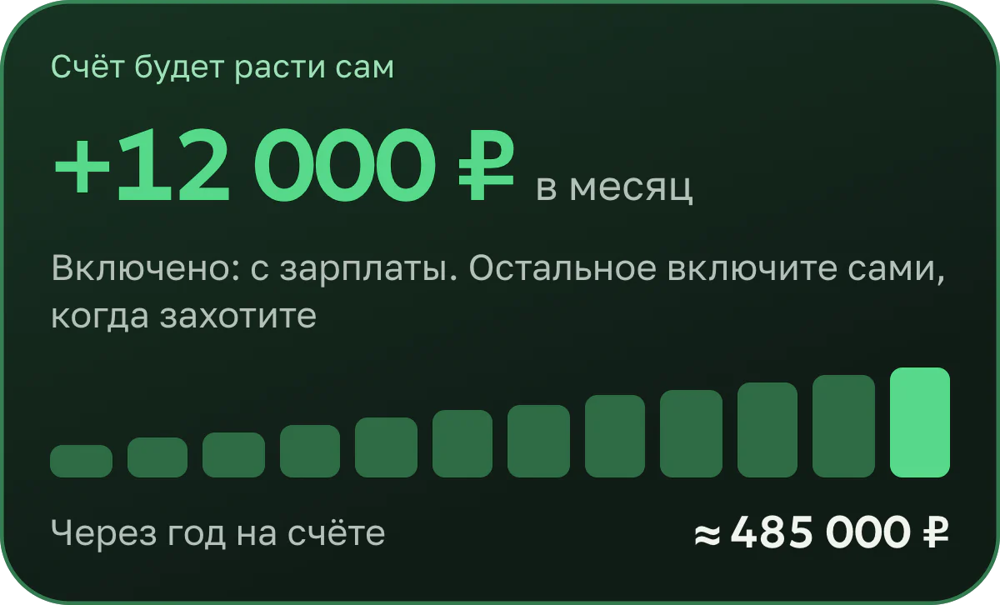
Экран и крупные фрагменты прототипа для iPhone 18 Pro Max. Суммы и ставки — пример.
Если их не хватает, клиент видит последствие каждого варианта. Ни один не выбран заранее.
Из запаса ничего не списывается: клиент недополучит около 177 ₽ процентов в месяц.
1. Оплата SberPay
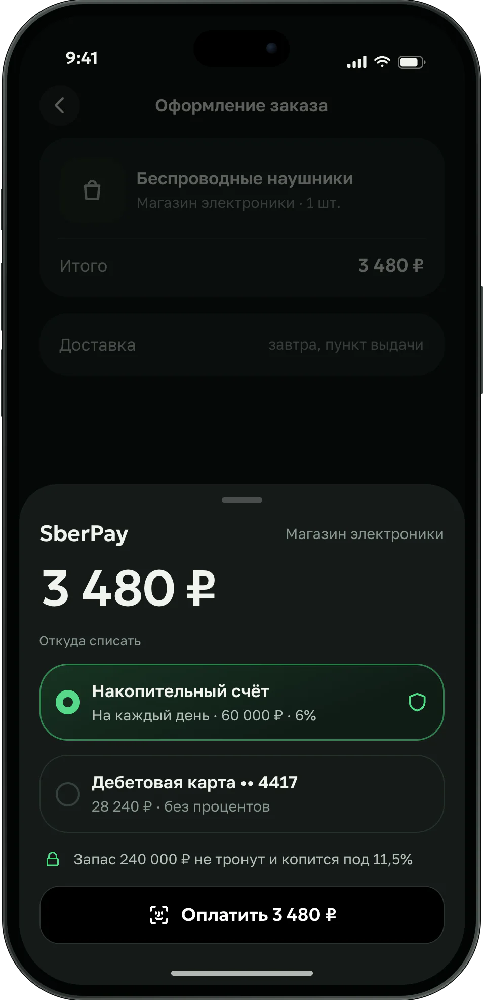
2. Не хватает: три варианта без предвыбора
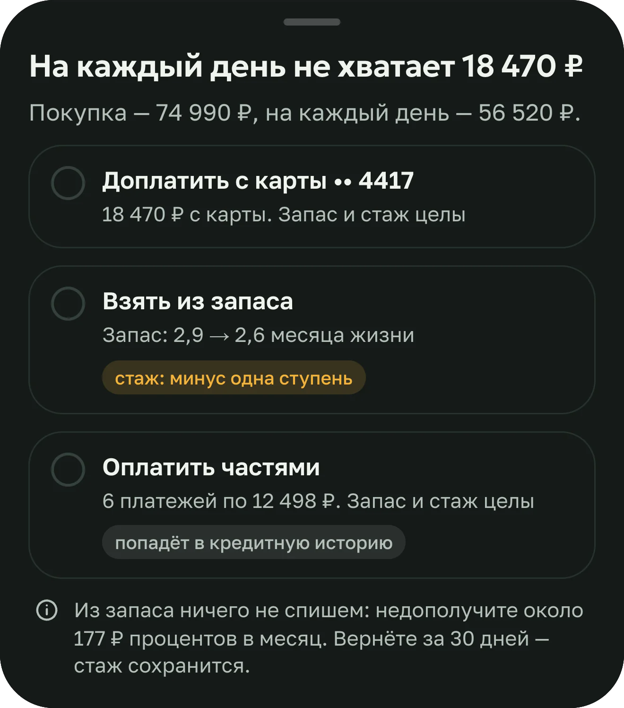
Экран и крупный фрагмент прототипа для iPhone 18 Pro Max. Вернёте сумму за 30 дней — стаж сохранится.
Ставка стоит рядом: сегодня, максимум и средняя по счёту. Когда запас дошёл до трёх месяцев, ставка выросла.
Следующая ступень — шесть месяцев. Дальше счёт предлагает вклад или фонд.
1. Счёт
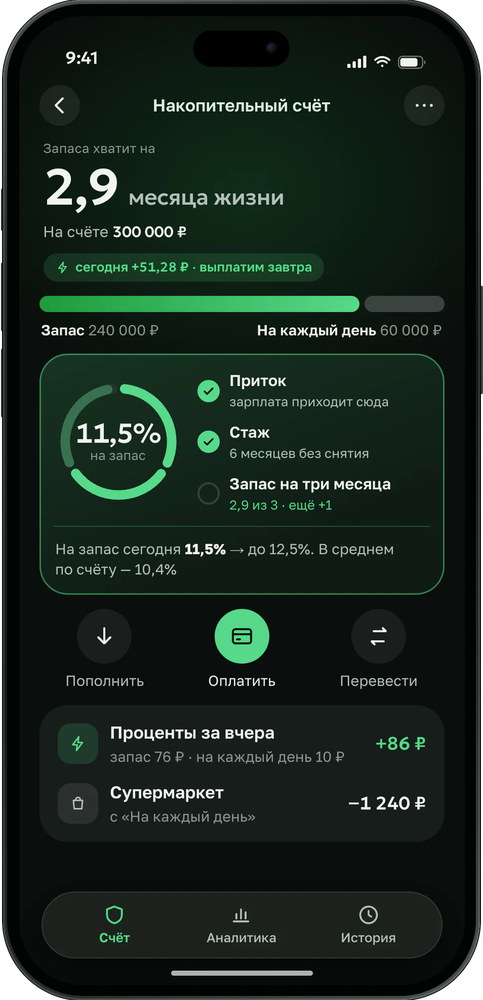
2. Итоги месяца
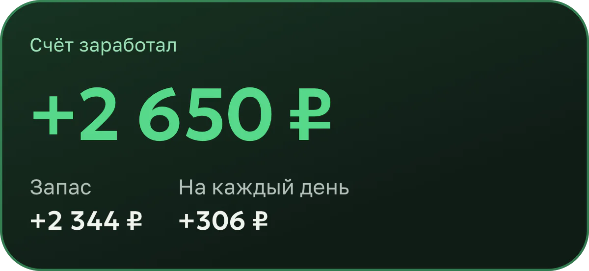
3. Мой запас
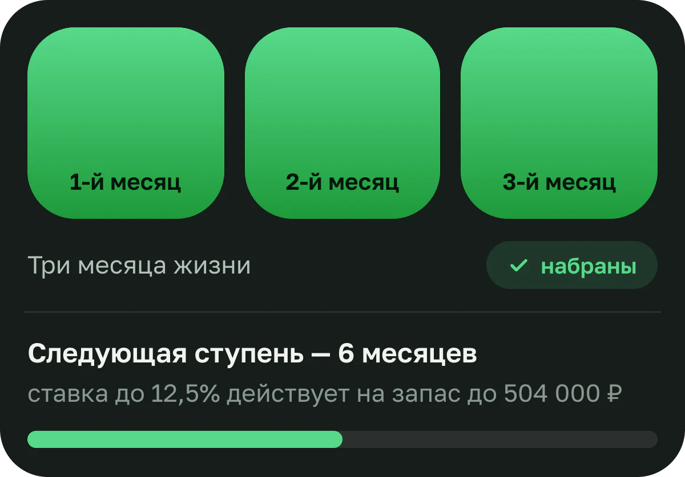
Экран и крупные фрагменты прототипа для iPhone 18 Pro Max. Расходы семьи в примере — около 84 000 ₽ в месяц.
Доход клиента — до
33 600 ₽
в год на 300 000 ₽ новых денег. С первого дня — 28 800 ₽.
Действующий клиент получает сетку на новые деньги сразу, а прежние переходят на неё за 12–24 месяца.
Сегодня в Сбере: накопительный счёт и карта
240 000 ₽ на счёте под базовые 7,5% и 60 000 ₽ на карте без процентов
Счёт, которым платят: от 28 800 до 33 600 ₽ в год
Надбавка за приток есть с первого дня. Стаж и запас добавляют по 2 400 ₽ в год. Ещё 3 600 ₽ приносят новые деньги на каждый день под 6%.
Базовая ставка счёта Сбера — 7,5% (условия с 27.10.2026, vbr.ru). Ставки нового счёта — допущения.
Маржа на 100 ₽ новых денег на сетке
+1,5–4,5 ₽
против 5,3 ₽ на приветственной ставке в годовом базисе и 6,5 ₽ на базовой. Поэтому сетка идёт только на новые деньги.
Адресный клиент с 300 000 ₽ новых денег приносит от 8 400 до 15 600 ₽ в год. Вся эта маржа — новая.
На 100 ₽ остатка в год платим клиенту
Маржа банка
Базовая
7,5% · прежние деньги
7,5 ₽
остаётся банку
+6,5 ₽
Приветственная
за год 8,7%
8,7 ₽
+5,3 ₽
Сетка
9,5–12,5% · новые
9,5 ₽
до 12,5
+1,5–4,5 ₽
На каждый день
6% · новые деньги
6 ₽
+8 ₽
«Тратится»
прежние деньги
весь доход остаётся банку
+14 ₽
размещаем по ключевой за 14 ₽
Размещение по ключевой 14%. Приветственная — Сбер: 14,5% два месяца, затем 7,5%. Без резервов, взносов в АСВ и расходов.
Риск
Чем закрыть
Процент идёт только на прирост над якорем. Деньги, которые уже лежали на картах Сбера, остаются без процентов.
Ни один вариант не выбран заранее. На экране есть пометка о кредитной истории. Сверить с законом о рассрочке.
Не блокировать деньги, а снижать ставку на снятую сумму. Сверить со ст. 858 ГК.
Главное число — месяцы жизни. Ставка показана как «сегодня → до», рядом — средняя по счёту.
Якорь — совокупные средства клиента в Сбере на день подключения: карты, счета и вклады.
Этап 2 · для всех клиентов
Клиент открывает один счёт вместо нескольких. Деньги на нём разложены по конвертам: под цели, обязательные платежи и свободные траты.
Запас 150 000
Отпуск 46 000
Кредит 23 400
ЖКХ 9 500
Детский сад 12 000
Свободные 59 100
Пример: семья, на счёте 300 000 ₽. Ставка за поведение идёт на запас и цели; платежи и свободные — без процентов.
01
Сумма и дата. Счёт сам считает взнос с каждого поступления и показывает, когда цель будет готова и как прийти раньше.
02
Кредит, ЖКХ, детский сад. Деньги откладываются заранее, платёж уходит сам в срок. Если не хватит, счёт предупредит за три дня.
03
Правило задаётся один раз: сначала платежи, потом цели, остальное свободно. Оно работает на аванс и на зарплату; первую раскладку клиент подтверждает.
04
Конверт можно открыть близким: вносить, видеть или тратить. Пополнить по ссылке через СБП можно из любого банка.
Проценты идут на запас и конверты-цели. Конверты-платежи и свободные деньги — без процентов: их ценность в автоматике.
Кредит
23 400 ₽
ЖКХ
9 500 ₽
Детский сад
12 000 ₽
Отпуск
12 400 ₽
Запас
12 000 ₽
Свободные
50 700 ₽
120 000 ₽
в месяц: аванс 25-го и зарплата 10-го
44 900 ₽
платежи закрыты до трат
24 400 ₽
цели и запас
50 700 ₽
свободные, ими платят · без процентов
Пример раскладки за месяц: аванс 48 000 ₽ и зарплата 72 000 ₽. Порядок и суммы клиент задаёт один раз.
Запись прототипа: от уведомления о зарплате до прогноза цели.
Клиент ничего не переводит руками.
1
Уведомление: 72 000 ₽ раскладываются.
2
Шесть конвертов пополнены, у каждого видна доля поступления.
3
300 000 ₽, запаса хватит на 1,8 месяца жизни.
4
Максим внёс 6 000 ₽ на отпуск.
5
Цель будет готова 1 июня.
Запись прототипа версии 2, 21 секунда, идёт по кругу. Открыть кликабельный прототип
Клиент создаёт конверты и задаёт правило раскладки. Оно работает на аванс и на зарплату.
Первую раскладку клиент подтверждает, дальше счёт раскладывает сам.
1. Новый конверт
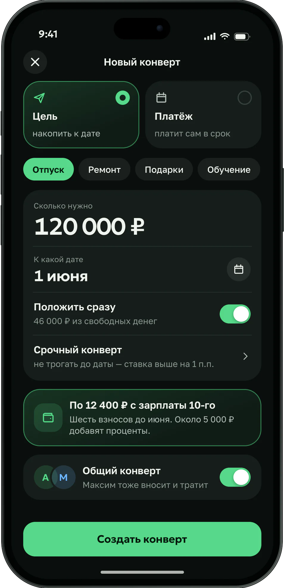
2. Раскладка: зарплата и аванс
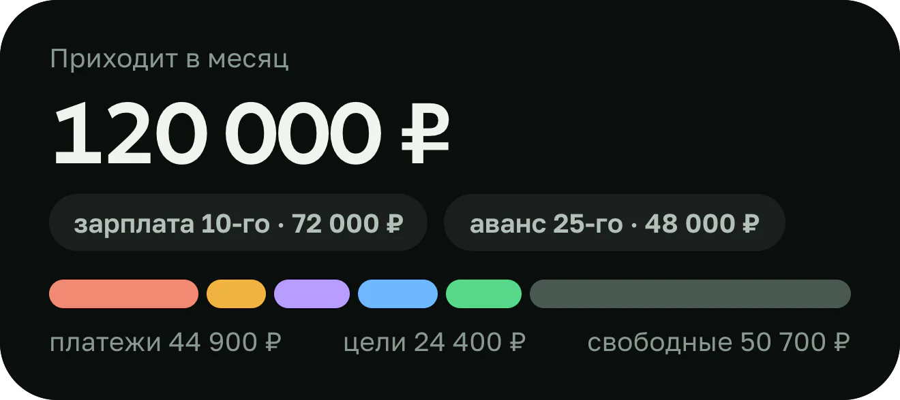
3. Счёт

Экран и крупные фрагменты прототипа для iPhone 18 Pro Max. Суммы — пример.
Незапланированная трата решается открыто: клиент видит последствие каждого варианта, ни один не выбран заранее.
Конверты с платежами защищены: их счёт не предлагает.
1. Платёж ушёл сам

2. Трата вне плана: откуда взять

Экран и крупный фрагмент прототипа для iPhone 18 Pro Max. Суммы — пример.
Участники вносят, видят или тратят. Пополнить по ссылке можно из любого банка: отправитель видит имя получателя.
На переводы по ссылке действует лимит: до 30 000 ₽ в месяц.
1. Общий конверт
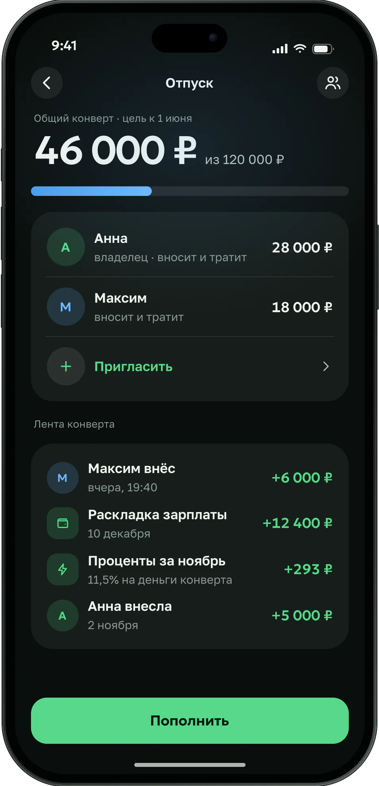
2. Доступ и ссылка

3. Прогноз цели

Экран и крупные фрагменты прототипа для iPhone 18 Pro Max. Права семьи на конверт требуют юридической проработки.
1 счёт
Цели, обязательные платежи и свободные деньги — в одном месте.
44 900 ₽
Кредит, ЖКХ и детский сад закрыты в день поступления.
24 500 ₽
При трёх надбавках 12,5% идут на запас и цели. Без надбавок — 18 620 ₽.
Проценты получают запас и цели. Платежи и свободные деньги работают иначе: уходят в срок сами и не требуют переводов между счетами.
Пример семьи через год после подключения: платежи 44 900 ₽ в месяц, на счёте 300 000 ₽, якорь списан.
Маржа на клиента с 300 000 ₽ в первый день
24 000 ₽
как сегодня: прежние деньги остаются на 7,5%, «тратится» — без процентов. В версии 1 маржа падала до 8 400–15 600 ₽.
6% на «тратится» стоят 6 ₽ на 100 ₽ остатка, сетка — 2–5 ₽ сверх базы. На 1 трлн ₽ это 60 млрд ₽ в год.
Вариант ставки
Маржа в год
Порог новых денег
Версия 1: 6% на «тратится»
8 400–15 600 ₽
50–65%
Без процентов на «тратится»
12 000–19 200 ₽
29–50%
Плюс якорь, первые 3–6 месяцев
24 000 ₽
0–20%
0%
50%
100%
Конверты окупает то, чего нет в марже: зарплата приходит на счёт, платежи по кредиту и ЖКХ привязывают клиента, деньги под цели не уходят за ставкой.
Клиент: 240 000 ₽ копится, 60 000 ₽ тратится. Диапазоны — от клиента со всеми надбавками до клиента без них.
Риск
Чем закрыть
Ценность «тратится» — в автоматике: платежи уходят сами. Процент идёт на запас и цели.
Счёт остаётся у владельца, участникам — права на конверт. Альтернатива — совместный счёт по 212-ФЗ.
Правило работает на каждое поступление: аванс и зарплату. Первая раскладка — с подтверждением.
Лимит на платёж, предупреждение за три дня, отмена в одно касание.
Юридическую конструкцию общих конвертов и автоплатежей нужно сверить с юристами.
Рекомендация · объединённый продукт
Счёт, которым платят, открывает продукт; конверты появляются с первой целью и зарплатой. Прежние деньги остаются на 7,5%, новые получают ставку за поведение.
Копится · 7,5% и до 12,5%
203 600 ₽
60 800 ₽
запас и цели: прежние и новые деньги
тратится · без процентов
Пример: 10 декабря, после зарплаты. На счёте 264 400 ₽.
Из этапа 1
Из этапа 2
В объединённом продукте
Запас
Конверты-цели
Копится: запас и цели, новые деньги — под ставку за поведение
Деньги на каждый день
Конверты-платежи и свободные
Тратится: платежи уходят сами, свободными платят, процентов нет
Цена снятия из запаса
Трата вне плана
Один экран без предвыбора: из цели, из запаса, с карты или частями
Итоги месяца
Раскладка зарплаты
Каждое поступление раскладывается, остаток месяца уходит в запас и цели
Месяцы жизни
Прогноз цели
Главное число счёта и экран аналитики: запас, ставка, цели, доход
Порог новых денег объединённого продукта: 0% в первый день, 29–50% после списания якоря.
Этап 1 · счёт, которым платят
Этап 2 · один счёт на все цели
Для кого
клиент, чья зарплата и накопления лежат в другом банке
действующий клиент: семья с платежами и целями
Что меняется
счёт становится платёжным
один счёт заменяет несколько
Ставка на «тратится»
6% на новые деньги
без процентов
Что получает клиент
до 33 600 ₽ в год на 300 000 ₽ новых денег
сетку на прирост, автоплатежи, цели на одном экране
Маржа на клиента в год
8 400–15 600 ₽, вся новая
24 000 ₽ в первый день, 12 000–19 200 ₽ после списания якоря
Главный риск
предложение получат прежние остатки
давний клиент ждёт сетку 12–24 месяца
Расчёт на клиента с 300 000 ₽ при ключевой 14%. Диапазоны — от клиента со всеми надбавками до клиента без них.
сразу, не на карту
по конвертам
кредит, ЖКХ, сад
свободными, без процентов
новые деньги — до 12,5%
29–50%
порог новых денег вместо 50–65%;
в первый день — 0%
Объединённый продукт: конверты из этапа 2, оплата со счёта из этапа 1, ставка за поведение на новые деньги в запасе и целях.
Порог в первый день
0%
Перешедший клиент приносит те же 24 000 ₽: якорь на 7,5%, «тратится» без процентов. Дальше порог растёт вместе со списанием якоря.
Каждая надбавка оплачена поведением: приток приносит новые деньги, стаж и запас делают их стабильными.
Вариант
Доля новых денег, при которой счёт окупается
Версия 1: 6% на «тратится»
50%
65%
Якорь списан полностью, 12–24 месяца
29%
50%
Якорь списан наполовину, 6–12 месяцев
17%
33%
Якорь списан на четверть, 3–6 месяцев
9%
20%
0%
25%
50%
75%
100%
Нижняя граница — перешедшие без надбавок, верхняя — все с тремя надбавками.
Клиент: 240 000 ₽ копится, 60 000 ₽ тратится. С адресным предложением этапа 1 порог после списания якоря — 36–59%.
На 100 000 ₽ в год
Получает клиент
Остаётся банку
Прежние деньги в «копится»
7 500 ₽, как сегодня
6 500 ₽, как сегодня
Новые деньги на сетке
9 500–12 500 ₽
1 500–4 500 ₽, которых не было
Остаток «тратится» от зарплаты, пришедшей на счёт
платежи уходят сами, остаток месяца идёт в запас
14 000 ₽ с остатка без процентов
Прежние деньги после списания якоря
9 500–12 500 ₽ вместо 7 500 ₽
1 500–4 500 ₽ вместо 6 500 ₽: цена удержания за 12–24 месяца стажа
Размещение по ключевой 14%. В версии 1 клиент с 300 000 ₽ получал до 15 600 ₽ в год сверх сегодняшнего за счёт маржи банка.
Спред на «копится» при любой ключевой
1,5–4,5 п.п.
Сетка идёт за ключевой. Остаток без процентов приносит 14 ₽ на 100 ₽ при ключевой 14% и 10 ₽ при 10%.
С фиксированными 6% на «тратится» порог при ключевой 10% вырос бы до 58–72%.
Маржа на клиента в год и порог
Ключевая 14%
12%
10%
«Спящий» клиент сегодня
24 000 ₽
22 800 ₽
21 600 ₽
Версия 2, якорь списан
12 000–19 200 ₽
10 800–18 000 ₽
9 600–16 800 ₽
Порог, версия 2
29–50%
31–53%
33–56%
Порог, версия 1
50–65%
54–68%
58–72%
Спред на «копится» постоянный: база — ключевая минус 6,5 п.п., сетка — от минус 4,5 до минус 1,5 п.п. Меняется только доход с остатка без процентов.
Клиент: 240 000 ₽ копится, 60 000 ₽ тратится. Версия 1 — сетка на все деньги и фиксированные 6% на «тратится».
Запись кликабельного прототипа, 48 секунд. Клиент проживает месяц по событиям.
Каждое событие меняет счёт на глазах.
1
Конверт «Отпуск» появляется на счёте.
2
Первая раскладка с подтверждением. Надбавка за приток: 10,5%.
3
SberPay из свободных, накопления целы.
4
Четыре варианта без предвыбора. Анна доплачивает с карты.
5
Платежи уходят сами, 1/12 прежних денег переходит на сетку.
Запись кликабельного прототипа версии 2, идёт по кругу. Открыть кликабельный прототип
Главное число — месяцы жизни. Ставка стоит рядом: на новые деньги и в среднем на «копится».
Первую раскладку Анна подтверждает сама, дальше включает автоматическую.
1 декабря
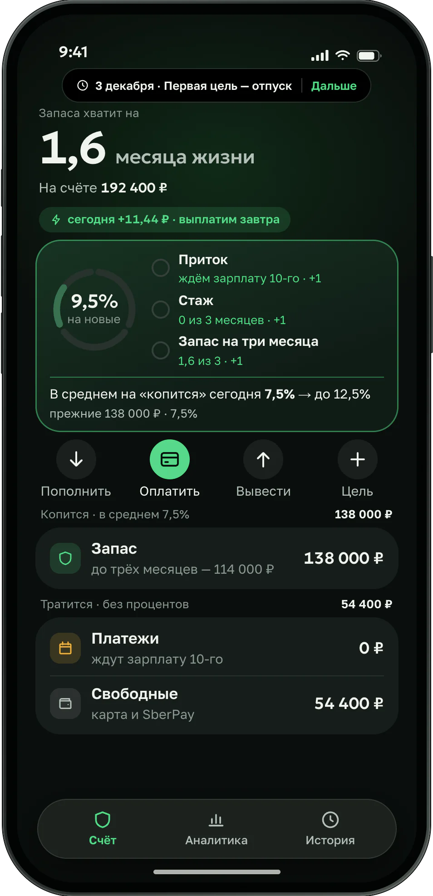
10 декабря: первая раскладка
10 декабря: надбавка за приток
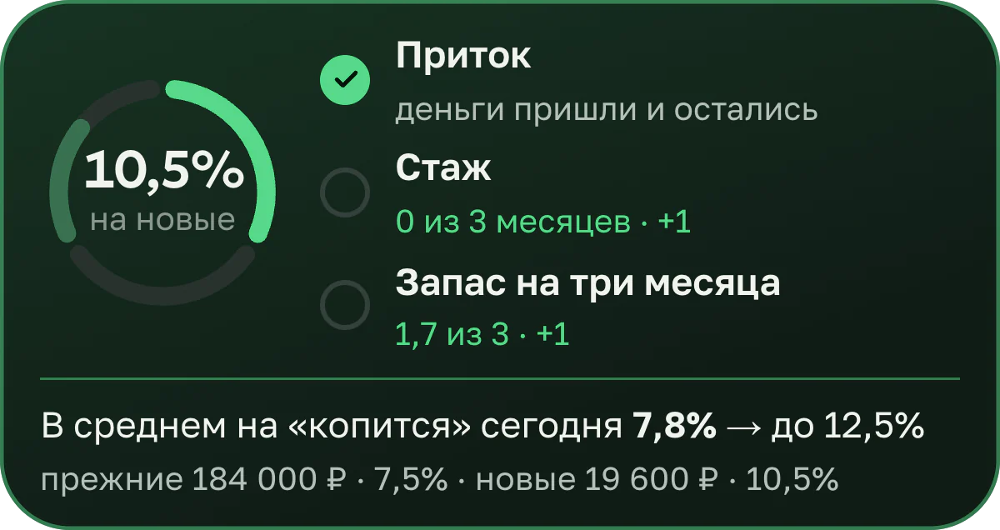
Экран и крупные фрагменты кликабельного прототипа. Плашка вверху экрана ведёт рассказ и показывает следующее событие.
Четыре варианта, ни один не выбран заранее. У каждого своё последствие: цель сдвинется, запас уменьшится, рассрочка попадёт в кредитную историю.
Снятие откатывает стаж на одну ступень. Если вернуть сумму за 30 дней, стаж сохранится.
14 декабря: в свободных не хватает
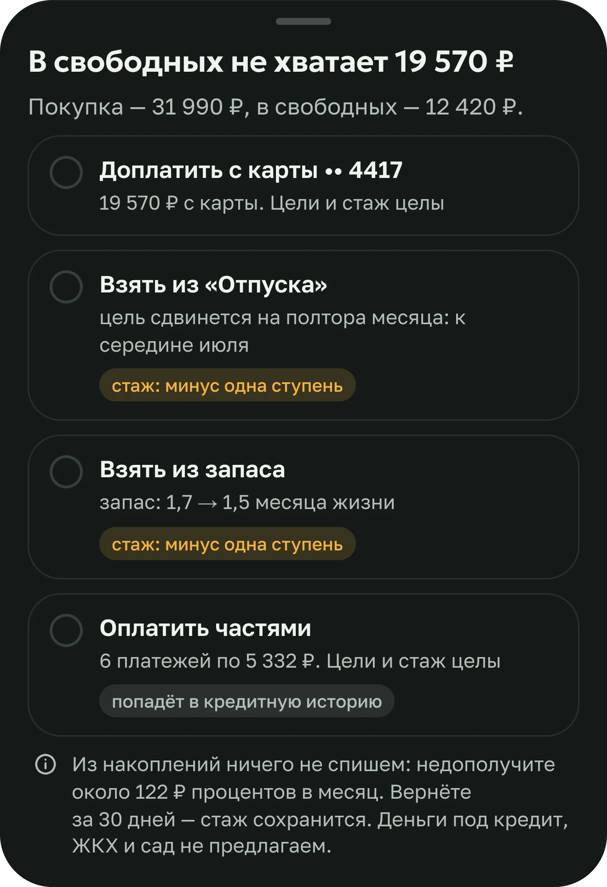
Пример из апреля: взяли из запаса
Как вернуть надбавку
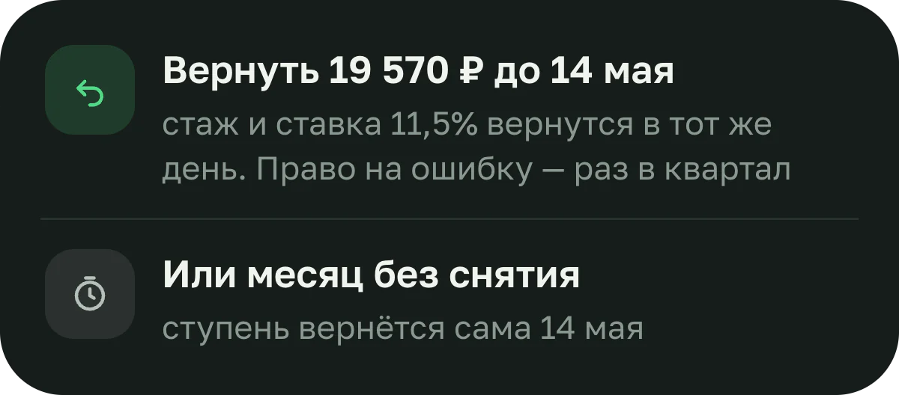
Крупные фрагменты прототипа. Со счёта ничего не списывается: клиент недополучает около 122 ₽ процентов в месяц.
Нынешний клиент видит до подключения, что станет с его счётом: прежние деньги остаются на 7,5%, новые получают сетку.
Каждый месяц без снятия 1/12 прежних денег переходит на новую ставку.
Что станет с вашим счётом

31 декабря: итоги месяца
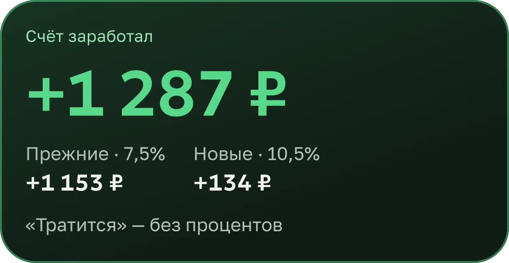
Переход на новую ставку

Экран и крупные фрагменты кликабельного прототипа. Без зарплаты на счёте переход занимает два года.
Стаж считается по месяцам без снятия. Через три месяца приходит вторая надбавка; третья — когда запаса хватает на три месяца.
К июню средняя ставка на «копится» выросла с 7,5% до 11,5%.
10 марта: надбавка за стаж

1 июня: все три надбавки

Крупные фрагменты кликабельного прототипа для iPhone 18 Pro Max. Суммы — пример.
Отдельный экран. Все цифры считаются из состояния счёта.
Каждый блок подсказывает следующий шаг.
1
Запаса хватит на 3,9 месяца. Следующая ступень — шесть.
2
Полученные и ожидаемые надбавки.
3
Доля того, что копится, и суммы по конвертам.
4
Прогресс и способ прийти раньше.
5
Прежние деньги, сетка и надбавки отдельно, в рублях в месяц.
Запись кликабельного прототипа версии 2: март, июнь и экран аналитики. Открыть кликабельный прототип
Вывести деньги так же просто, как внести. Цель с датой можно сделать срочной. Будущую прибавку — заранее направить в запас.
Последствия видны до действия: запас в месяцах, проценты, стаж.
Перевод в другой банк
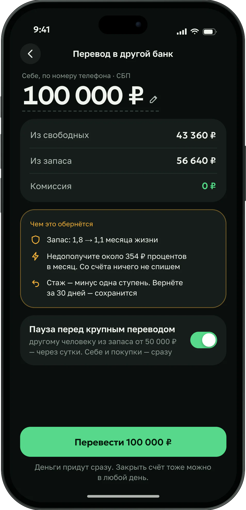
Срочный конверт

С прибавки — в запас

Экраны только показывают условия; состояние счёта не меняется. Срочный конверт требует юридической проработки.
Правки по ревью интерфейса внесены во все три прототипа.
Проценты за день показаны с копейками и датой выплаты.
Светлая тема
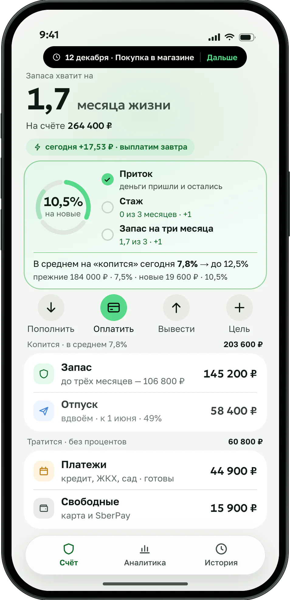
Тёмная тема
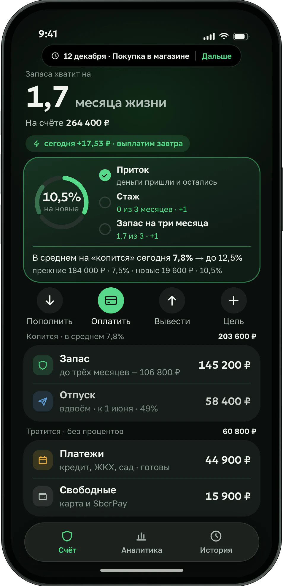
1
Остаток в рублях и ставка стоят вторым планом.
2
Одни переменные цвета на все экраны.
3
Контраст подписей не ниже 4,5:1.
4
Счёт, аналитика, история — во всех прототипах.
5
Конверт, свободные, запас, месяцы жизни.
Светлая тема показана на главном экране объединённого прототипа.
Новые деньги
Клиент задаёт сумму и дату, счёт сам подтягивает деньги через СБП. Они сразу идут в запас.
Одно согласие в приложении банка-отправителя. Бесплатно до 30 млн ₽ в месяц.
Новые деньги
Пополнить конверт может человек из любого банка. Он видит имя получателя, цель и кнопку «открыть такой же счёт».
На переводы по ссылке действует месячный лимит.
Защита
Клиент включает её сам. Крупный перевод из запаса другому человеку уходит через сутки, покупки не задерживаются.
Для пожилых клиентов — подтверждение близким, сервис «второй руки» (41-ФЗ).
Округление покупок оставлено как привычка: оно переносит деньги внутри счёта и новых не приносит.
01
Клиент соглашается заранее: половина будущего роста зарплаты идёт в запас. Платёж закрытого кредита переходит туда же.
02
Правило включается в зарплатном проекте и при назначении пенсии. Часть дохода попадает в «копится» раньше, чем на карту.
03
Цель с датой оформляется как вклад внутри счёта. Клиенту — ставка выше, банку — срочные деньги.
04
Больше шести месяцев расходов: счёт предлагает вклад или фонд денежного рынка Сбера.
Механики — гипотезы для пилота. Срочный конверт и фонд требуют юридической проработки.
01
Случайная выборка действующих клиентов и клиентов с зарплатой в другом банке. Контрольная группа предложение не получает.
02
Чистый приток совокупных средств против контроля, подушку в месяцах, долю «тратится» и маржу на клиента.
03
Чистый приток не отличается от контроля. Маржа на перешедшего клиента с учётом новых денег ниже, чем в контрольной группе. Растут жалобы на якорь.
04
Конджойнт «ставка против функций»: нужна ли сетка от 9,5% или хватит 8,5%. Тест понимания двух ставок на прототипе.
Срок, размер выборки и пороги остановки — уточнить с аналитиками портфеля.
Риск
Чем закрыть
Якорь списывается за стаж: 12 месяцев с зарплатой на счёте, 24 — без неё. График виден на экране переезда.
В предложении — ставка сегодня и путь до максимума, на главном экране — средняя на «копится». Сверить с требованиями Банка России к раскрытию.
Прирост считается за вычетом собственных переводов в другие банки за 90 дней.
Метрика трайба — чистый приток совокупных средств клиента, а не остаток на счёте.
Окно в 90 дней и сроки списания якоря — допущения для обсуждения.
1
Без процентов на «тратится» и адресные 6% новым клиентам, якорь на прежние деньги, сетка от ключевой минус 4,5 до минус 1,5 п.п., потолок в шесть месяцев расходов.
2
Шесть месяцев, контрольная группа, расчёт на данных портфеля. Кликабельный прототип готов.
3
Запас без блокировки денег, права семьи на конверт, автоплатежи, рассрочка на экране нехватки, раскрытие ставок.
4
Чистый приток совокупных средств и подушка в месяцах вместо остатка на накопительном счёте.
Рабочая версия 2. Экономика — на рыночных допущениях; расчёт на данных портфеля — первый шаг пилота.